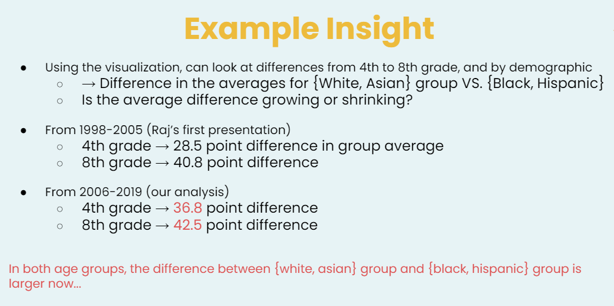

Our analysis shows that there is a big gap from Hispanics and Blacks students to Whites and Asians students that persists from elementary to middle school.
The data also shows that in all demographics, though, math scores have increased across the board .
Despite this, the actual gap is widening between the Whites, Asians group and the Black, Hispanic groups.
What the above is saying is that if we look at the average scores for Whites and Asians against the average scores for Blacks and Hispanics, the difference has actually increased for both 4th and 8th grade. While that is negative, the positive news is that the difference between 4th and 8th grade scores is shrinking, so there is less of a age discrepancy but more of a demographic one . Still, math scores have risen across the board, which is likely positive news.
This underscores what Bridge to Calculus is doing is growing in importance every year.